全部笔记
配饰
在配件页里做眼镜和兽耳
Lady Aska · VRoid Studio 1.13.0 · 2026-11-25
先看戴上之后的样子
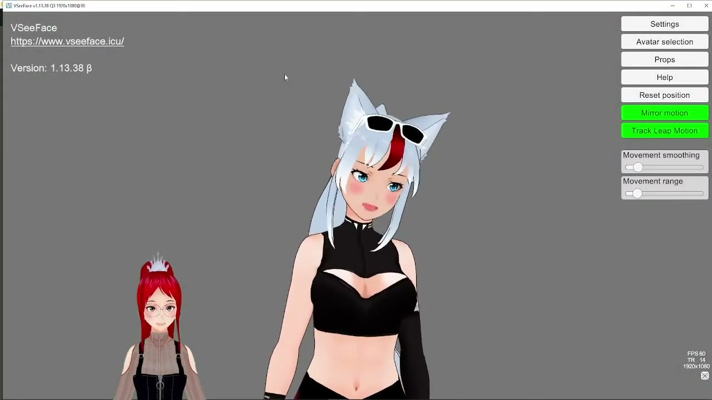
窗口标题是 VSeeFace v1.13.38 Q3 1920x1080@30。画面左上写着 VSeeFace、https://www.vseeface.icu/、Version: 1.13.38 β。右侧按钮从上到下是 Settings、Avatar selection、Props、Help、Reset position，再下面 Mirror motion 和 Track Leap Motion 是绿色。Movement smoothing 和 Movement range 各有一条滑杆，数字被按钮挡住，没有读到。角色睁着眼，白框黑镜片的墨镜架在头顶，兽耳上有白斑。左下角红发、小王冠、细框眼镜是录像叠上去的，不是 VSeeFace 里的第二个模型。
这一镜是做完、导出之后放进 VSeeFace 的结果。编辑器本身是 VRoid Studio 1.13.0。下面先做眼镜，再做兽耳。口播说较新的版本给耳朵单独的骨头，会轻轻晃；这里头在动，耳朵跟着头，没有单独停一帧只让耳朵晃。
眼镜：进 Accessories
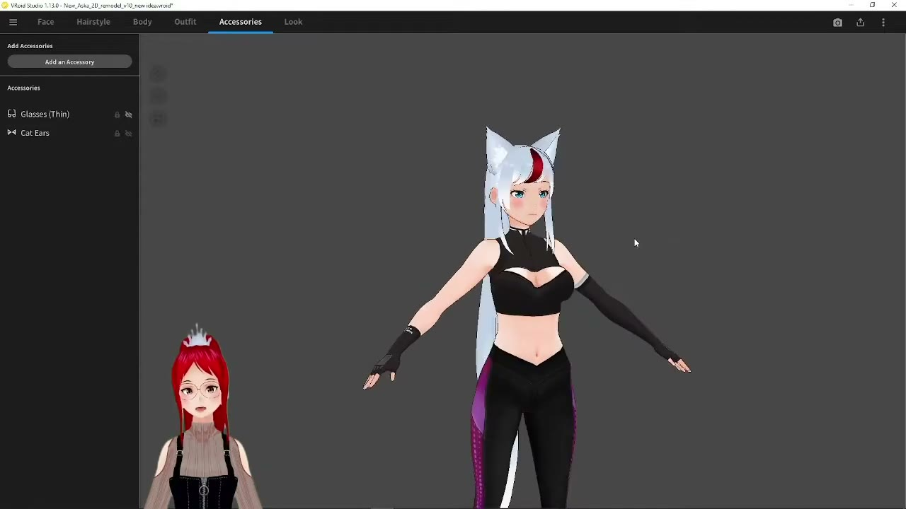
标题栏是 VRoid Studio 1.13.0 - New_Aska_2D_remodel_v10_new idea.vroid*，星号表示还没保存。顶部标签是 Face、Hairstyle、Body、Outfit、Accessories、Look，Accessories 有下划线。左侧 Add Accessories 下面是 Add an Accessory。Accessories 列表是 Glasses (Thin) 和 Cat Ears，每行右边有两枚没有文字的小图标。右侧参数面板没打开。白发角色这一镜没有戴正在讲的那副眼镜。
点顶部 Accessories。列表里这两样是进页面时就有的，不是这一步新加的。口播说这个分类不能把配件导进导出，也不能把做好的东西存成可以换到另一个模型上的预设，删掉就要从头再做；能另外保存的只有贴图。这一镜没有点删除，也没有弹出导入窗口。左下角的红发形象同样是录像叠层，后面每张编辑器画面都有，不再重复。
添加时只有粗框和细框
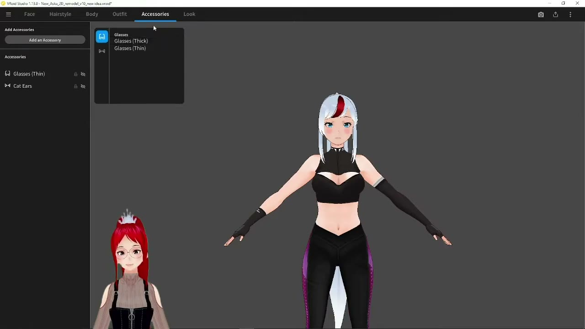
菜单贴在左侧圆钮旁边。从上到下是 Glasses、Glasses (Thick)、Glasses (Thin)。Glasses (Thick) 那一行是深色，光标在它上面。列表里原来的 Glasses (Thin) 和 Cat Ears 还在，人脸上还没有新的镜框。
点 Add an Accessory，再点眼镜图标，菜单里就是这三行。口播说粗和细是预设，除了少数细节不能再改造型，所以要先在这里选定。点 Glasses (Thick) 之后，列表底下会多出一行 Glasses (Thick)，原来的 Glasses (Thin) 还留着。两副可以同时存在。
Frame Shape 4 拉满，先看侧面合不合脸
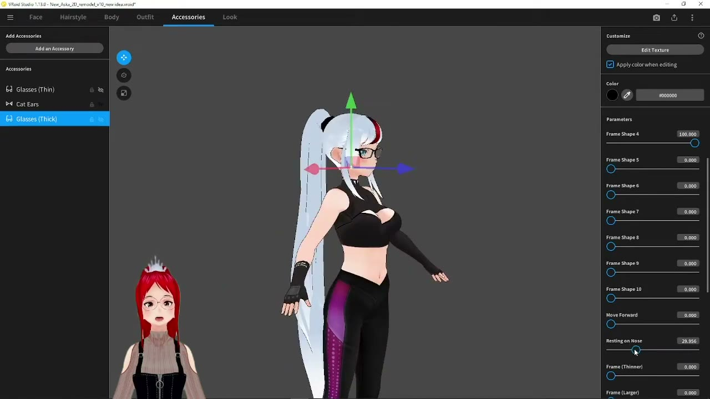
左侧 Glasses (Thick) 是蓝底。视口左边第一个圆钮是蓝的，脸上是红、绿、蓝三根箭头。右侧 Customize 下面是 Edit Texture，Apply color when editing 勾着。Color 是黑的，色号 #000000。Parameters 里 Frame Shape 4 是 100.000，能看到的 Frame Shape 5 到 10 都是 0.000。Move Forward 是 0.000。光标停在 Resting on Nose 上，数值是 29.956。再下面 Frame (Thinner) 是 0.000，再下一条只露出滑杆，名字没进画面。
选中 Glasses (Thick)。口播说粗框和细框各有 10 个预置形状，两边的形状是同一套，并把 Frame Shape 4 当作例子。往右拉，这一镜是 100.000，其余能看见的 Frame Shape 都还是 0.000。口播又说 Frame Shape 9 不论选粗还是细，拉出来都是细框。滑杆列表里 Shape 9 停在 0.000，画面没有把 9 拉开做对比。侧面看，镜框还贴在脸上，口播说此刻并不合这个头。Resting on Nose 正在拖，盒子里是 29.956，还没松手。
细框用 Resting on Nose 和 Move Forward 贴上去
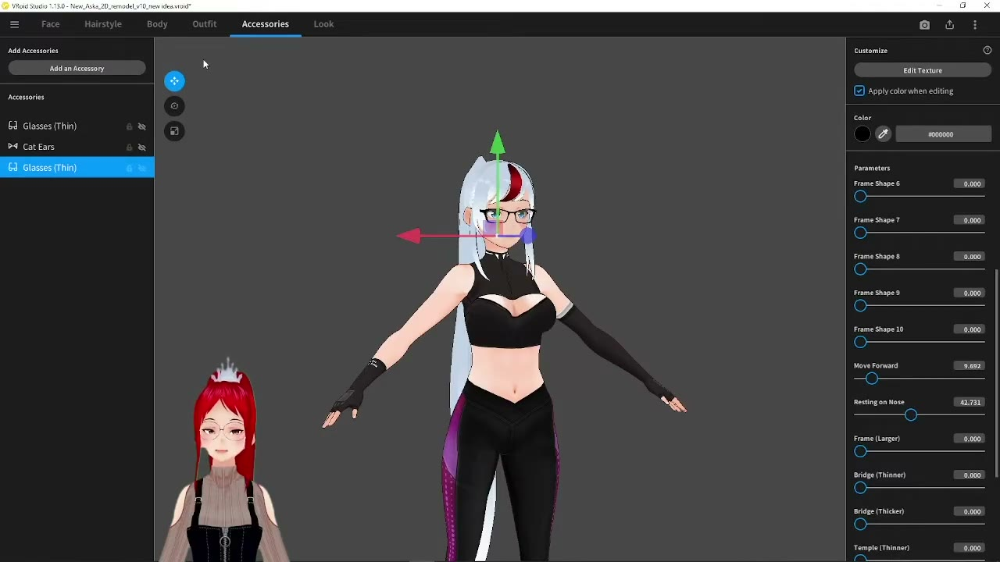
左侧蓝底的是 Glasses (Thin)，列表里还能看到 Cat Ears。第一个圆钮仍是蓝的，箭头十字在脸上，镜框是细的。右侧 Color 仍是 #000000，Apply color when editing 勾着。滚到下面之后，Frame Shape 6 到 10 都是 0.000。Move Forward 是 9.692，Resting on Nose 是 42.731。再往下 Frame (Larger)、Bridge (Thinner)、Bridge (Thicker)、Temple (Thinner) 都是 0.000。Temple (Thinner) 贴着面板底边，下面还有没有，这一镜没停住。
选中列表里的 Glasses (Thin)。口播说不合脸时用 Resting on Nose 修正，觉得挡五官就用 Move Forward 把框往前送一点。这一镜细框已经戴在眼睛上，Move Forward 是 9.692，Resting on Nose 是 42.731。粗框那一镜的 Move Forward 还是 0.000，Resting on Nose 是 29.956，两行的滑杆不是同一套数。Frame (Larger)、Bridge (Thinner)、Bridge (Thicker)、Temple (Thinner) 都没动。上面被滚走的 Frame Shape 1 到 5，这一镜看不见。
第二个圆钮是旋转
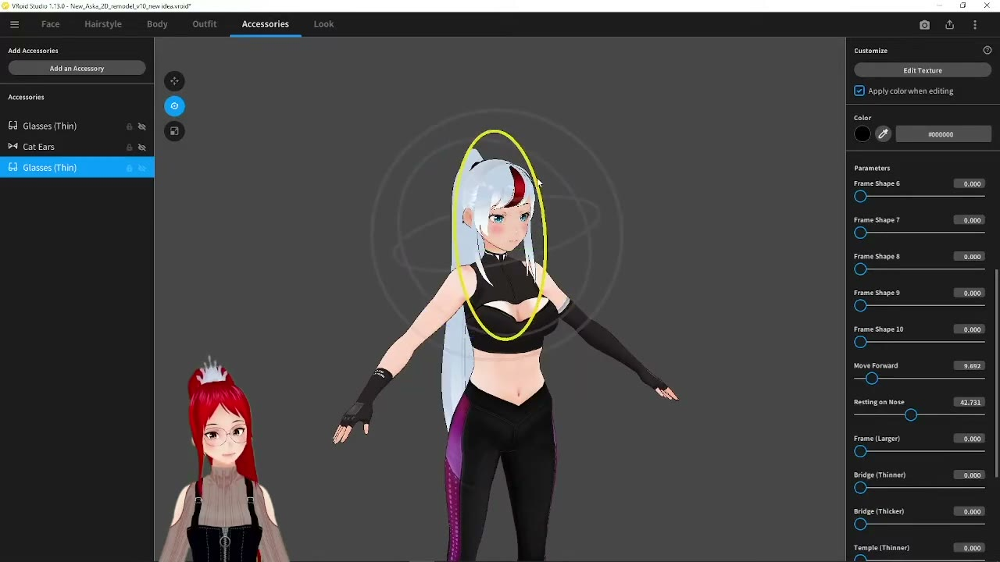
左侧第二个圆钮变成蓝的，第一个和第三个是灰的。头上有一圈黄色的环，镜框还在眼睛上。Move Forward 仍是 9.692，Resting on Nose 是 42.731。Frame (Larger)、Bridge (Thinner)、Bridge (Thicker)、Temple (Thinner) 仍是 0.000。Color 是 #000000。
视口左侧竖着三个没有文字的圆钮。口播把它们说成绕 X、Y、Z 移动、旋转，以及缩放。第一个亮起时是彩色箭头，这一步点第二个，头上出现旋转环。滑杆数字没有变，所以环是在改位置和角度，不是在改 Frame Shape。口播说这样转看起来没什么用，接着才会把眼镜转离脸。
第三个圆钮把框推到头顶，Ctrl+Z 能撤
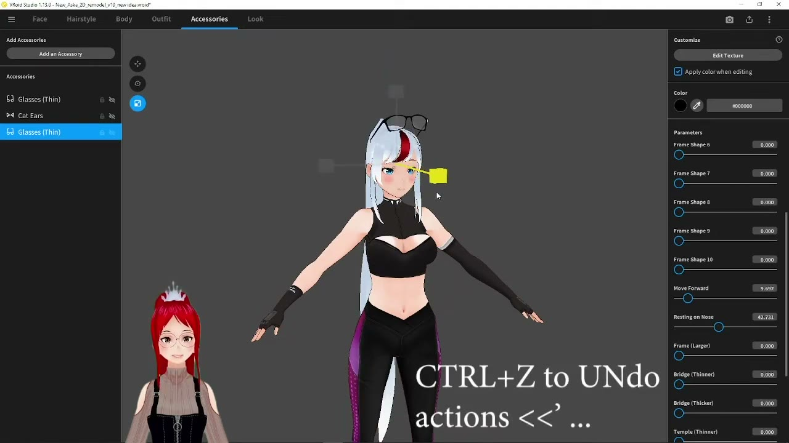
第三个圆钮是蓝的。黑框离开眼睛，架在头顶，脸旁边有一块黄色方块。底部白字是 CTRL+Z to UNdo actions，后面还有 <<' ...，后半被省略。Move Forward 仍是 9.692，Resting on Nose 仍是 42.731。选中的还是 Glasses (Thin)，Color 是 #000000。
点第三个圆钮，拖黄色方块，框可以被挤，也可以整个离开脸。口播说眼镜不必停在脸上。画面字幕写的是 CTRL+Z to UNdo，自动字幕听成了 redo，以画面这行字为准。口播说只要不离开这个分类，中间弄乱了都能撤。撤完之后框会回到眼睛上，滑杆仍是刚才那两个数，说明撤的是圆钮上的移动，不是 Resting on Nose。
勾着 Apply color when editing 时，取色会改整副框
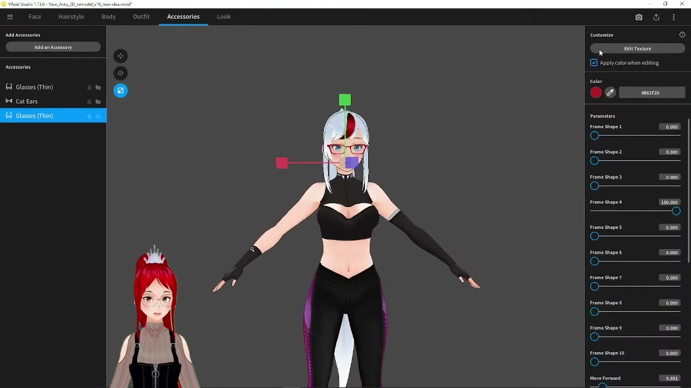
Glasses (Thin) 选中，第一个圆钮是蓝的，框是红色，回到了眼睛上。Apply color when editing 勾着。Color 旁边色号是 #B61F20，色块是红的，旁边有吸管。Frame Shape 1、2、3 是 0.000，Frame Shape 4 是 100.000，Frame Shape 5 到 10 是 0.000。底边露出 Move Forward 9.692。光标靠近 Edit Texture。
在 Color 里取一个红色，色号变成 #B61F20，镜框跟着变红。Apply color when editing 这一镜是勾着的。口播说不一定要进贴图，只用取色器也可以。Frame Shape 4 仍是 100.000，红色没有改形状。
Edit Texture 里，上面那组是镜框线框
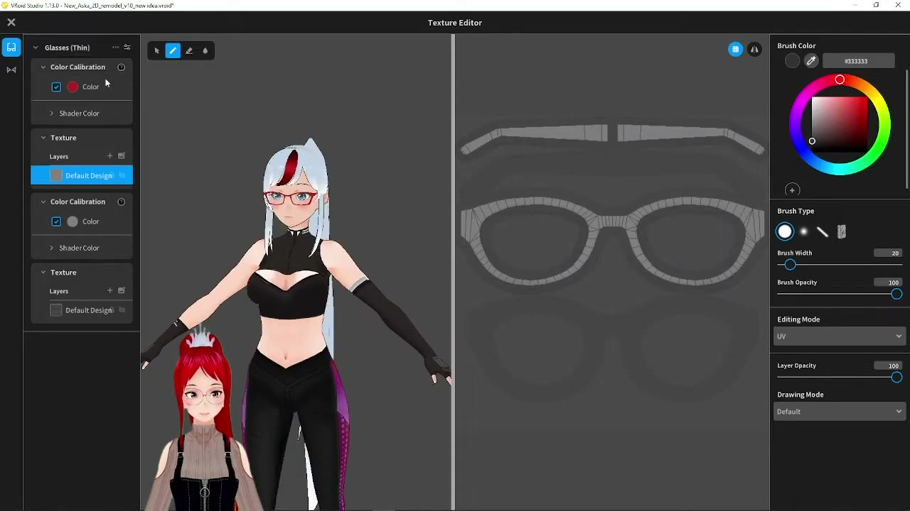
顶部变成 Texture Editor。左侧树是 Glasses (Thin)。Color Calibration 里 Color 勾着，色块是红。下面是 Shader Color。Texture 里 Layers 旁边有加号，Default Design 是蓝底，色块偏浅。再往下还有一组 Color Calibration，Color 的勾是空的，色块是灰，它自己的 Default Design 没有选中。中间脸上仍是红框。右边 UV 是一副眼镜的线框，镜片中间是空的。竖条第一个铅笔是蓝的。Brush Color 是 #333333。Brush Width 是 20，Brush Opacity 是 100。Editing Mode 是 UV，Layer Opacity 是 100，Drawing Mode 是 Default。
点 Edit Texture。同一副眼镜下面有两组贴图。选中上面这组的 Default Design 时，右边是镜框线框，不是镜片。脸上的红框还在，所以这层不是全黑。Brush Width 停在 20，没有在这张上涂。口播说 VRoid 的贴图上想画什么都可以。下面那组灰的 Color 这一镜没有点开。
贴图如果已经是黑的，线框会看不见
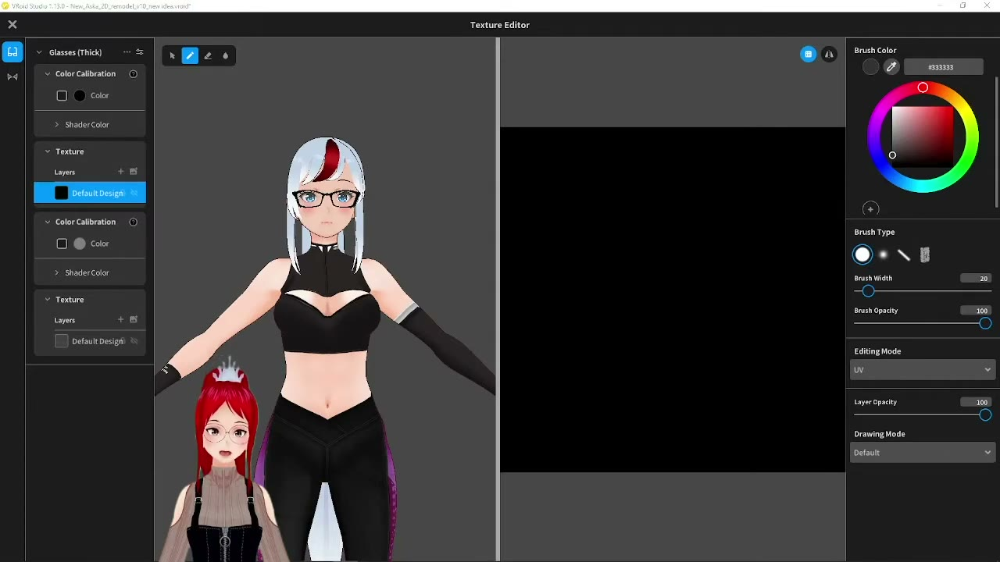
左侧树改成 Glasses (Thick)。Color 的勾是空的，色块是黑。Default Design 选中，色块也是黑。竖条第二个橡皮是蓝的。右边 UV 上半是纯黑，没有线框。Brush Color 仍是 #333333，Brush Width 20，Brush Opacity 100。Editing Mode 是 UV，Layer Opacity 100，Drawing Mode 是 Default。人脸上是黑框。
换到 Glasses (Thick) 的上面那组贴图。口播说如果先用取色器把贴图弄成黑色，再进来就看不见网格，也看不见参考线，所以想自己画的话不要停在黑色上。这一镜 UV 就是一块黑，和这句话对得上。脸上的黑框还在，说明黑的是贴图颜色，框的模型没有删。
把黑擦掉之后，脸上的框会消失
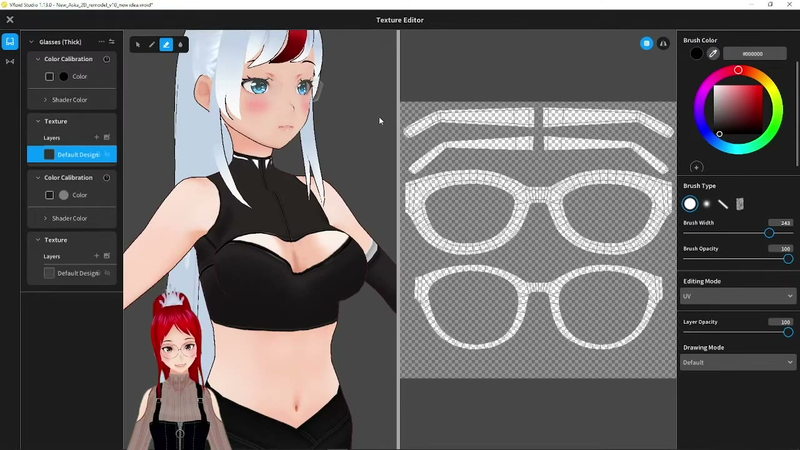
还是 Glasses (Thick)，橡皮仍是蓝的。Default Design 选中。UV 变成灰白格子，上面是镜腿，中间和下面各有一副眼镜线框。Brush Color 是 #000000，Brush Width 拉到 243，Brush Opacity 100。Editing Mode 仍是 UV。近景的脸上没有镜框。
用橡皮把那块黑擦掉。格子表示贴图透明，线框又显出来，方便看着网格画。脸上的框跟着没了。口播说把黑色整个删掉会得到一个看不见的框，接着才能单独看镜片。Brush Width 收到 243，是为了大笔擦，不是在改镜框滑杆。
镜片是下面那组贴图
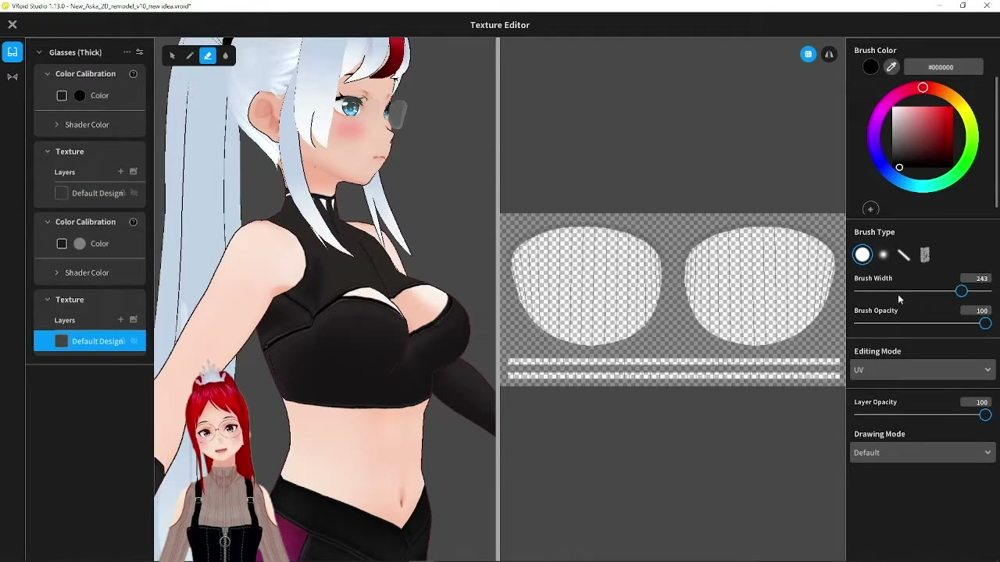
Glasses (Thick) 里上面那组 Texture 的 Default Design 没选中。下面又有一组 Color Calibration、Shader Color、Texture，这组的 Default Design 是蓝底，色块是黑。UV 上是两块椭圆的镜片线框，下面还有一条横的线框，都铺在格子上。橡皮是蓝的。Brush Color #000000，Brush Width 243，Brush Opacity 100。Editing Mode 是 UV。脸上仍然没有镜框。
点下面那组的 Default Design，UV 从整副镜框换成两块镜片。口播说镜片是单独的贴图，要涂黑就涂这里。上面那组被擦空的框还在，所以脸上暂时什么都没有。这一镜还没往镜片上涂。
镜片涂黑，再把镜框涂白
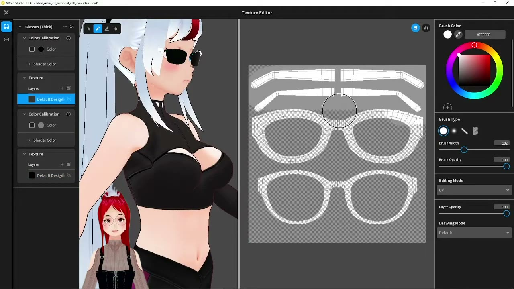
上面那组 Default Design 重新选中，色块是黑；下面那组 Default Design 没选中，色块也是黑。铅笔是蓝的。Brush Color 是 #FFFFFF，Brush Width 是 102，Brush Opacity 是 100。UV 上镜框线框还在，笔刷圆圈停在鼻梁。脸上已经有黑镜片，框还没涂完。Editing Mode 是 UV，Layer Opacity 100，Drawing Mode 是 Default。
先在下面那组镜片上用黑色铺满，脸上的镜片会变黑。再回到上面这组镜框，把笔色改成 #FFFFFF，沿着线框涂。口播说这样就能得到深色镜片加白框。这一镜鼻梁上还剩一圈没涂完的笔刷。Width 102 只影响这一笔的粗细。
到 Look 里看 Accessory 的 Outline
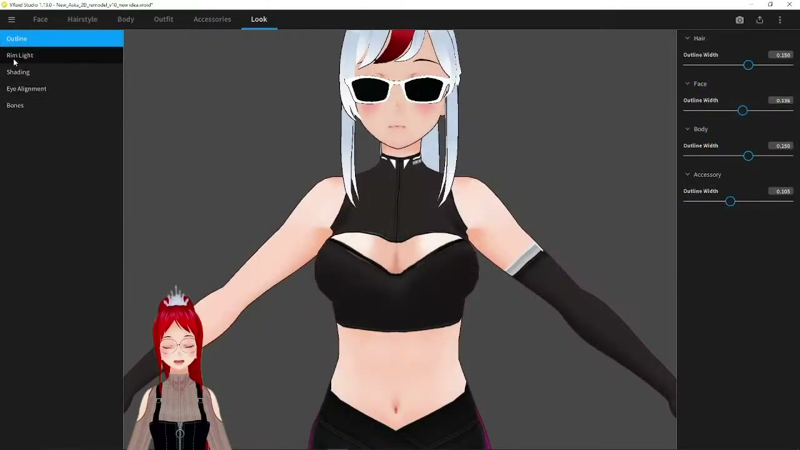
顶部 Look 有下划线。左侧 Outline 是蓝底，下面还有 Rim Light、Shading、Eye Alignment、Bones，光标在 Rim Light 上。右侧四条 Outline Width：Hair 0.150、Face 0.136、Body 0.150、Accessory 0.105。白框黑镜片戴在眼睛上，边缘有一圈线。
口播说还可以把 outlines 打开，让框更显眼。点到 Look，左侧停在 Outline。Accessory 那条是 0.105，这一镜没有拖它，只是墨镜已经戴上、轮廓线开着。Hair、Face、Body 的数字也没动。
墨镜用圆钮放到头顶，不是用 Move Forward
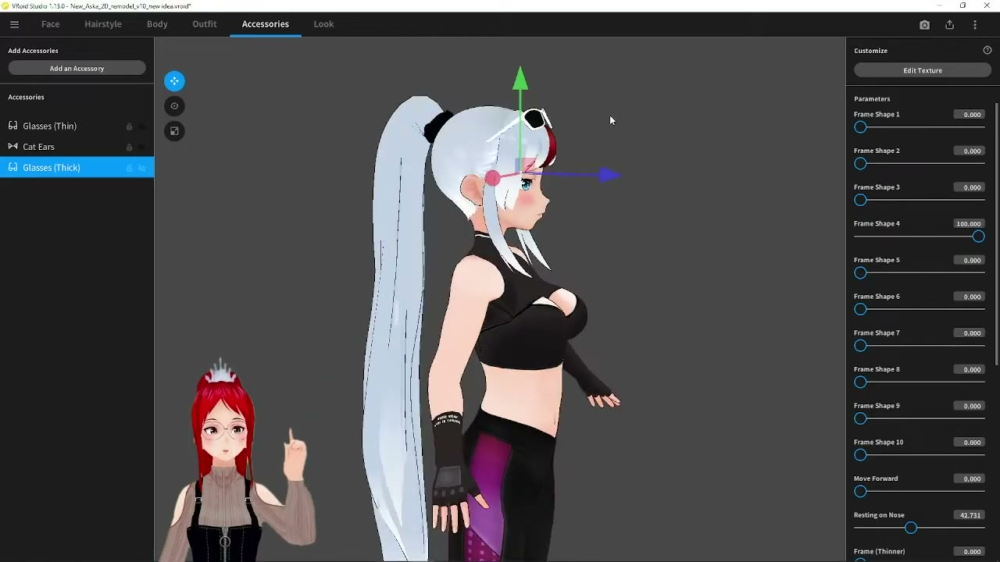
回到 Accessories，Glasses (Thick) 是蓝底。侧面马尾，白框黑镜片的墨镜在头顶，脸上没有镜框。移动箭头还在。Frame Shape 4 是 100.000，能看到的其他 Frame Shape 是 0.000。Move Forward 是 0.000，Resting on Nose 是 42.731。面板从 Parameters 开始，Color 和 Apply color when editing 被滚到上面，这一镜看不见。
口播说墨镜如果戴在眼睛上会挡住眼睛，所以改放到头顶。选中的是 Glasses (Thick)。Move Forward 仍是 0.000，Resting on Nose 是 42.731，和细框贴合时的 9.692 不是同一个数。头顶这个位置是左侧圆钮转上去的，不是把 Move Forward 拉大。Frame Shape 4 还是 100.000。
兽耳：菜单里写着 Furry Ears、Cat Ears、Rabbit Ears
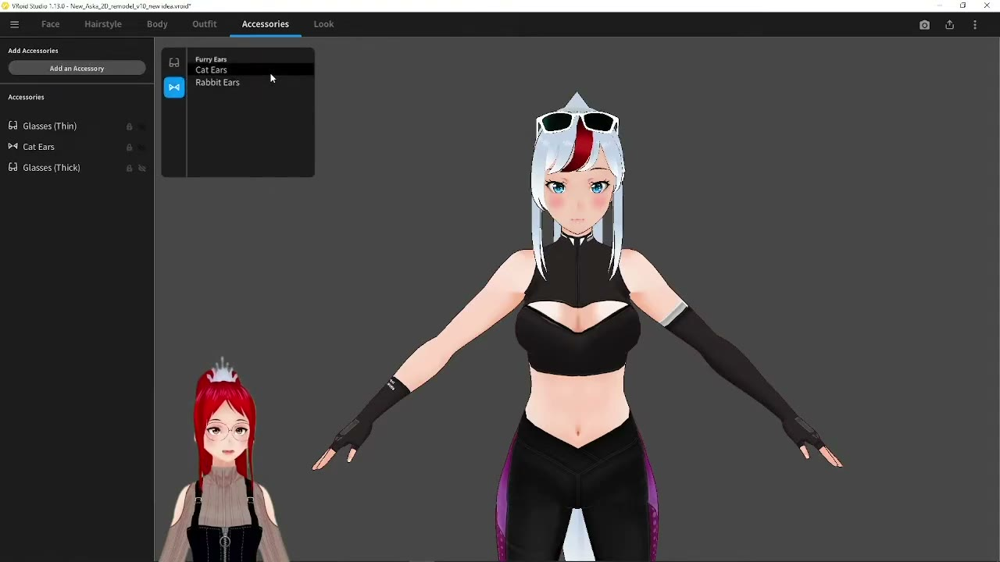
菜单三行是 Furry Ears、Cat Ears、Rabbit Ears。Cat Ears 那一行是深色，光标在上面。左侧列表仍是 Glasses (Thin)、Cat Ears、Glasses (Thick)。头顶是刚才那副墨镜，没有新的兽耳。
眼镜做完再点 Add an Accessory，换到耳朵图标。口播说想要猫、狼、兔子这一类耳朵，但预览里只写了 cat 和 rabbit，别的藏在滑杆里。画面上的三行就是 Furry Ears、Cat Ears、Rabbit Ears，没有 wolf。点 Cat Ears 会在列表底下再加一行，原来那行 Cat Ears 还在。
Tip Roundness 和 Ear Size 先定大小
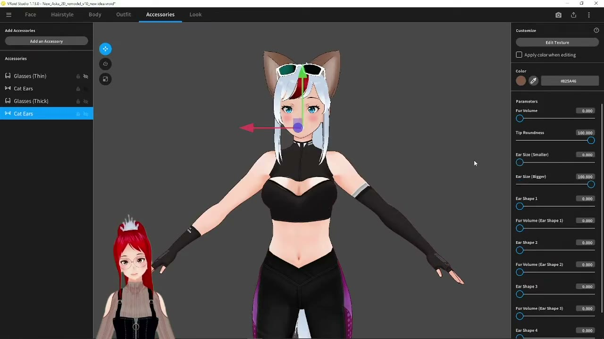
列表底部新的 Cat Ears 是蓝底，上面还有原来的 Cat Ears、两副眼镜。Apply color when editing 没有勾。Color 是棕色，色号 #825A46。Fur Volume 是 0.000，Tip Roundness 是 100.000，Ear Size (Smaller) 是 0.000，Ear Size (Bigger) 是 100.000。Ear Shape 1 到 4 都是 0.000，每条下面的 Fur Volume (Ear Shape 1) 到 Fur Volume (Ear Shape 3) 也是 0.000，Fur Volume (Ear Shape 4) 被底边切掉。头顶是棕色的猫耳，墨镜还架在上面。移动箭头开着。
选中新加的 Cat Ears。口播说 Tip Roundness 就能把形状改掉，再把耳朵变小或变大，看起来会像另一种动物。这一镜尖端圆度拉到 100.000，变大的那条 Ear Size (Bigger) 也是 100.000，变小的那条是 0.000，四个 Ear Shape 都还没动。耳朵是棕色的，色号 #825A46。Apply color when editing 这时没勾，和眼镜那一段不一样。
Ear Shape 2 拉满时，耳朵又高又尖
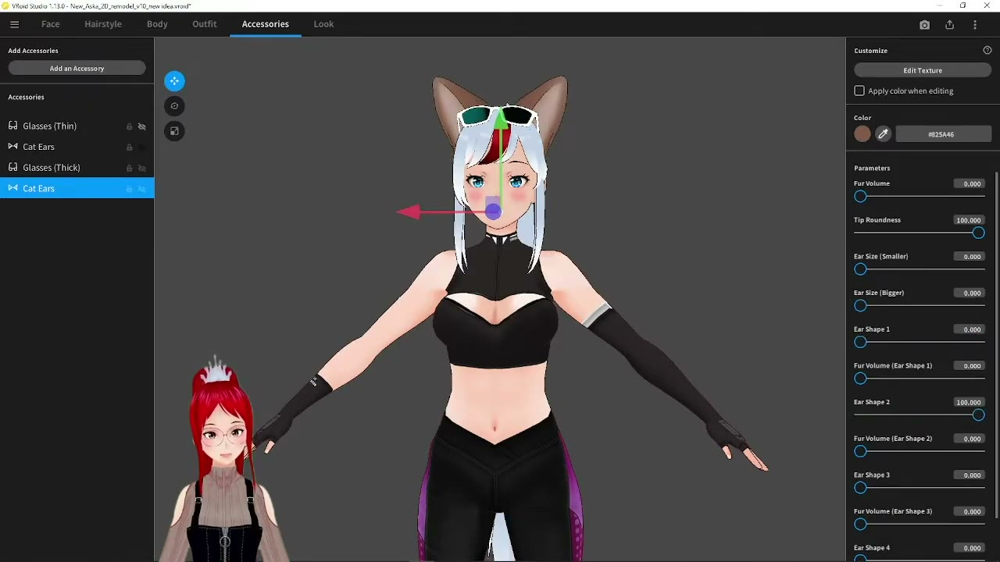
Cat Ears 仍选中。Tip Roundness 还是 100.000。Ear Size (Smaller) 和 Ear Size (Bigger) 都是 0.000。Ear Shape 1 是 0.000，Ear Shape 2 是 100.000，Ear Shape 3 和 4 是 0.000。对应的 Fur Volume (Ear Shape 1) 到 3 是 0.000。Color 仍是 #825A46，Apply color when editing 没勾。耳朵变得又高又尖，墨镜夹在两耳之间。
把 Ear Size (Bigger) 退回 0.000，只把 Ear Shape 2 拉到 100.000，耳朵从普通猫耳变成又高又尖。口播说四条基础形可以混用：第一条向下倒，第二条把耳朵变大变尖，第三条像马或驴，第四条让两耳靠近。画面上停住的尖耳是 Ear Shape 2。Ear Shape 3 和 4 这一段一直是 0.000，马、驴和两耳靠拢没有单独拉开。
Ear Shape 1 让耳朵外翻，Fur Volume 加上内层绒毛
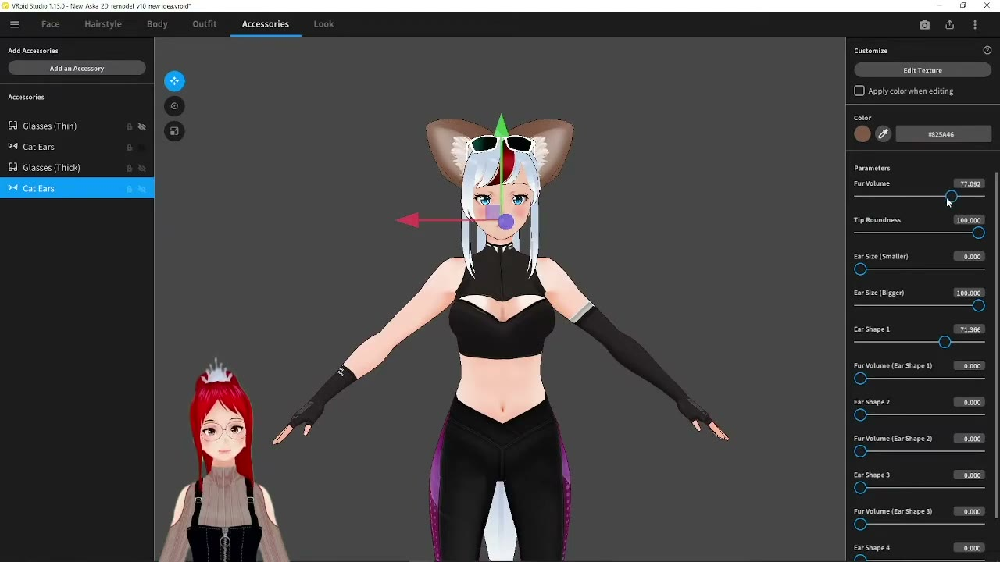
光标在最上面的 Fur Volume 上，数值是 71.092。Tip Roundness 是 100.000，Ear Size (Smaller) 是 0.000，Ear Size (Bigger) 是 100.000，Ear Shape 1 是 71.366。Fur Volume (Ear Shape 1)、Ear Shape 2、Fur Volume (Ear Shape 2)、Ear Shape 3、Fur Volume (Ear Shape 3)、Ear Shape 4 都是 0.000。Color 是 #825A46。耳朵又大又向外翻，耳廓里面有浅色绒毛。Apply color when editing 没勾。
Ear Shape 2 退回 0 之后，把 Ear Shape 1 拉到 71.366，再把 Ear Size (Bigger) 拉回 100.000，耳朵向外张开、耳尖往下。口播说第一条就是向下倒的那种。最上面单独一条 Fur Volume 拉到 71.092 时，耳廓里多出浅色绒毛。每条 Ear Shape 下面还有自己的 Fur Volume (Ear Shape n)，那些仍是 0.000。口播说自己不喜欢这层内绒毛，觉得不自然，而且经常穿出耳朵。这一镜能看到绒毛，看不出穿模，穿模是口播。
进耳朵贴图前，会先弹出说明
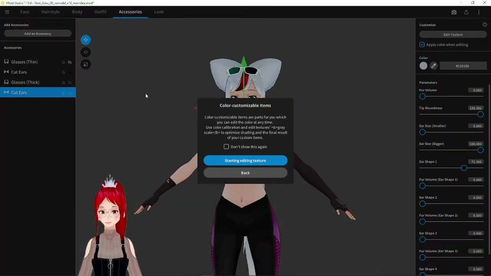
对话框标题是 Color-customizable Items。正文写着这类部件随时可以改颜色，并用 color calibration 和 edit textures 的灰度来优化阴影和最后的效果。Don't show this again 没有勾。蓝按钮是 Starting editing texture，灰按钮是 Back。耳朵这时是浅色，墨镜还在头顶。右侧 Apply color when editing 勾着，Color 色号是 #C1D1E6。Ear Shape 1 仍是 71.366，Ear Size (Bigger) 是 100.000，Tip Roundness 是 100.000，Fur Volume 回到 0.000。
点 Edit Texture 之后先出这个窗口，不是保存提示。口播说离开配件贴图时，不会像衣服或头发那样问你要不要把这件物品存下来。这一镜两个按钮都还在，下一镜已经进了 Texture Editor。色号改成 #C1D1E6 并且勾上 Apply color when editing 之后，耳朵从棕色变成浅色。Fur Volume 退回 0.000，内层绒毛这一镜不再明显。
新建 Layer 1，在耳廓上点白斑
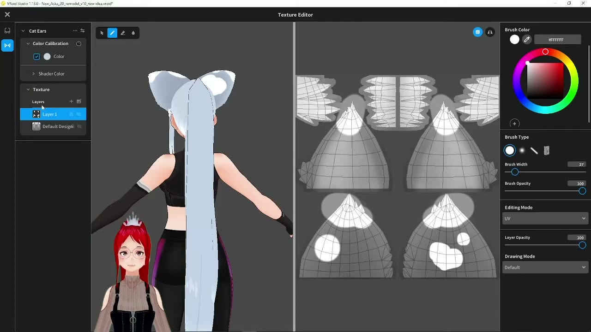
Texture Editor，树是 Cat Ears。Color 勾着，色块是浅的。Texture 里 Layers 右边有加号。Layer 1 是蓝底，下面是 Default Design。竖条铅笔是蓝的。Brush Color 是 #FFFFFF，Brush Width 是 27，Brush Opacity 是 100。Editing Mode 是 UV，Layer Opacity 是 100，Drawing Mode 是 Default。UV 上两只大耳和下面的小块都有白色圆斑，左右不完全一样。UV 右上角有两个没有文字的图标，左边蓝色的是四格，右边黑色的像一条中线，黑色的没有亮起。背面能看到耳尖上的白斑。
口播说在左边新建一层，再在耳朵那块上画想要的形状。Layers 下面已经有 Layer 1，加号在 Layers 右边，这一镜没有停在按下加号的瞬间。白斑画在 Layer 1 上，Default Design 还在下面。口播说要两边一样就打开 mirror，想要自然一点就左右各画。画面上没有 Mirror 这个词。右上两个图标也没有文字，黑色那个没亮，下面两块 UV 的白斑并不对称，所以这一镜是分开点的，不是开了镜像一次涂完。Brush Width 收到 27。
图层右键里有 Export，这一镜光标停在上面
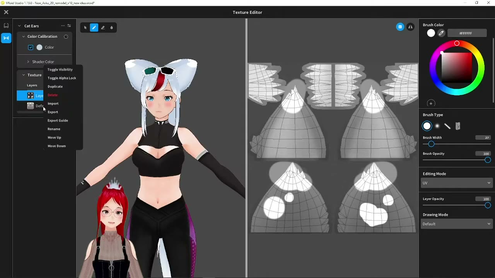
菜单盖住图层名，只露出 Laye 和 Defa。从上到下是 Toggle Visibility、Toggle Alpha Lock、Duplicate、Delete、Import、Export、Export Guide、Rename、Move Up、Move Down。Delete 是红字。光标在 Export 上。UV 上的白斑还在。Brush Color 仍是 #FFFFFF，Brush Width 27。
在图层上右键。口播说配件本身存不下来，贴图可以：右键要导出的那一层，点 Export，就可以留到以后用，或者拿到别处。菜单里 Export 在 Import 下面，还有一项 Export Guide。这一镜只是停在 Export 上，没有出现保存文件的窗口，所以没有写成已经导出。Delete 是红的，没有点。
导出 VRM 时，两个勾保持空着
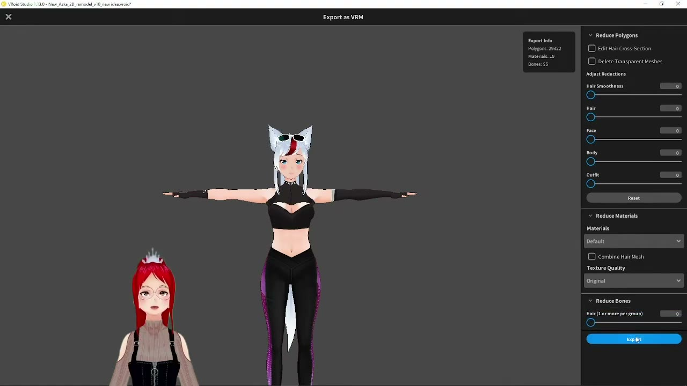
标题是 Export as VRM。角色是 T 字站姿，兽耳带白斑，墨镜在头顶。Export Info 写着 Polygons: 39322、Materials: 19、Bones: 95。Reduce Polygons 里 Edit Hair Cross-Section 和 Delete Transparent Meshes 都没勾。Adjust Reductions 的 Hair Smoothness、Hair、Face、Body、Outfit 都是 0，下面有 Reset。Reduce Materials 里 Materials 是 Default，Combine Hair Mesh 没勾，Texture Quality 是 Original。Reduce Bones 展开后，Hair (1 or more per group) 是 0。蓝按钮 Export 上有光标。
回到可以导出的画面，点 Export。口播说如果要把头发做到耳朵上，或者这个模型要拿到 Unity，就要关掉 Delete Transparent Meshes 和 Combine Hair Mesh。画面上这两项本来就没勾，Edit Hair Cross-Section 也没勾。减面和减骨的滑杆都是 0，没有拖。光标停在 Export 上，这一镜还没按下。后面打开的就是开头那张 VSeeFace 1.13.38 β。Unity 没有出现。